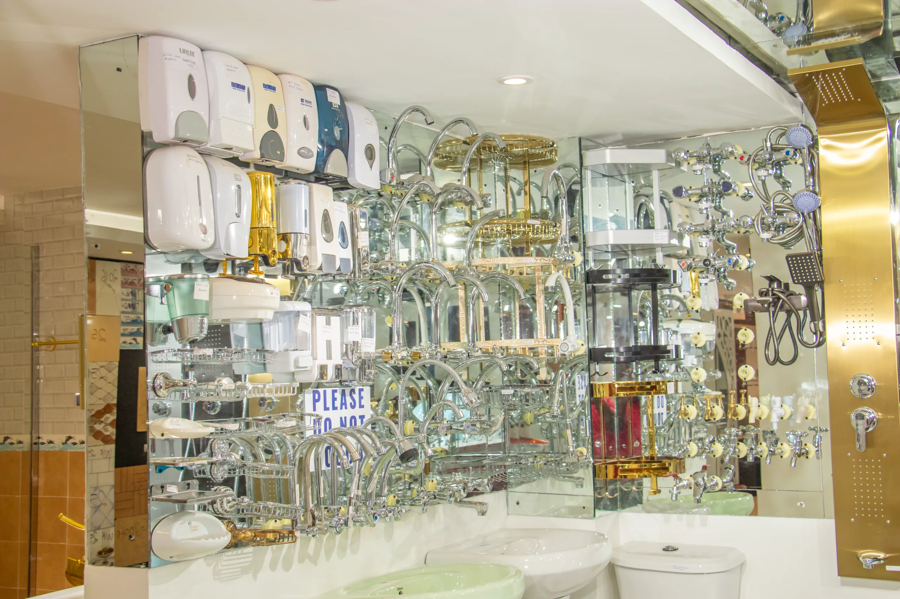
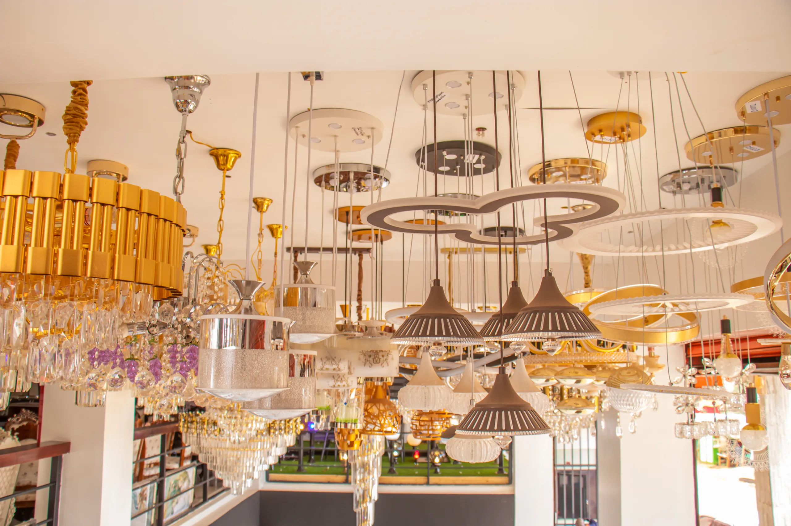
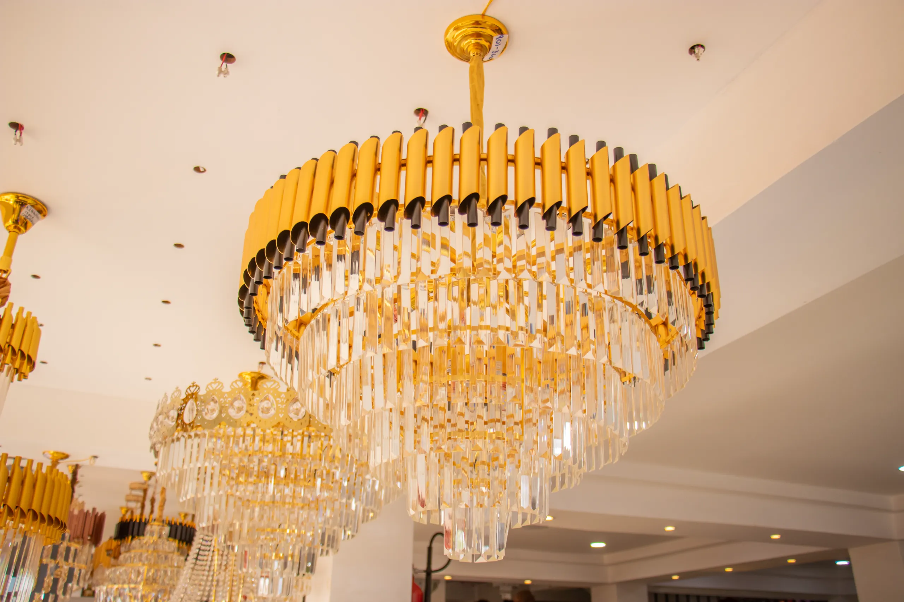
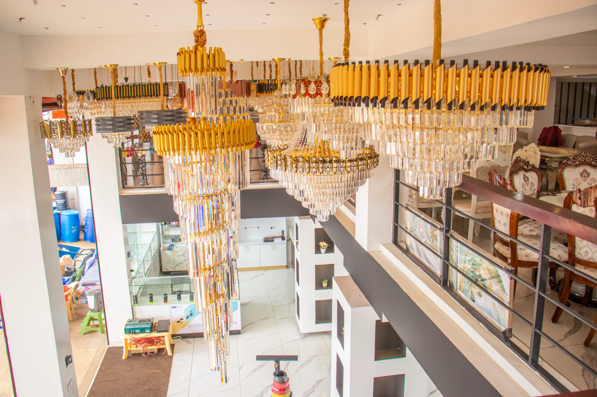
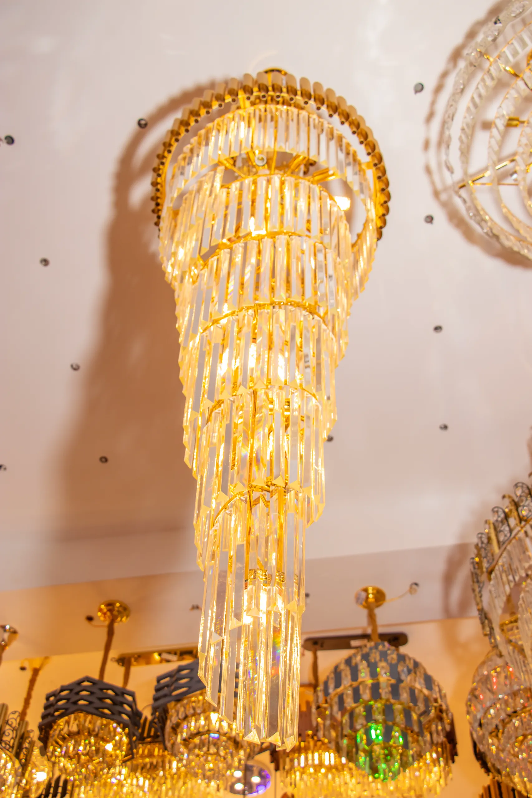
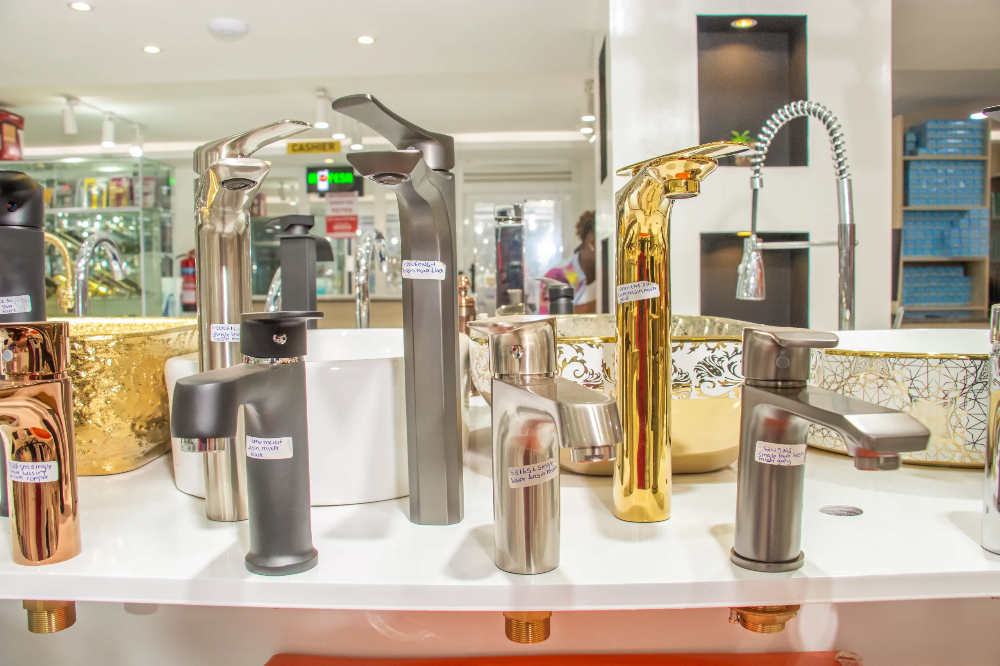
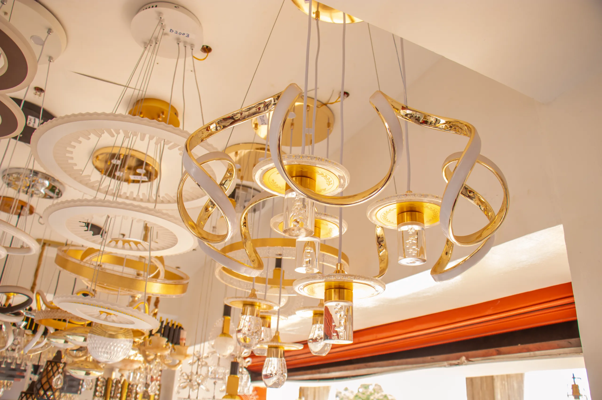
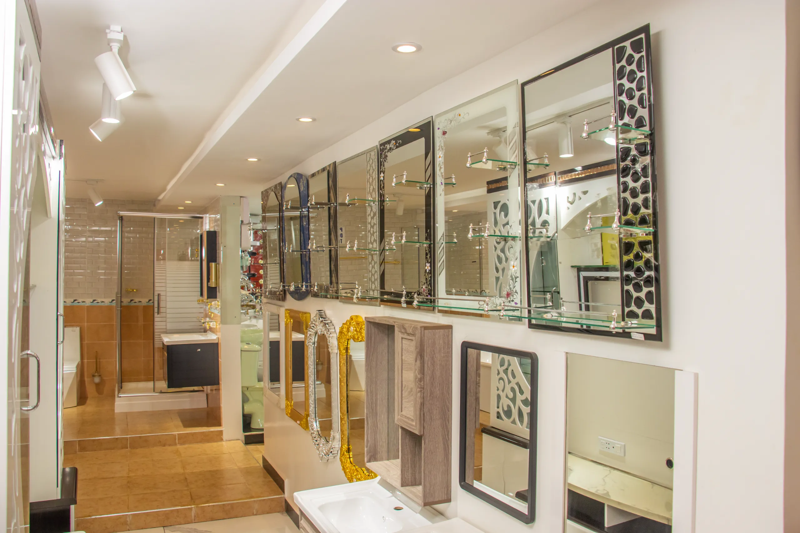
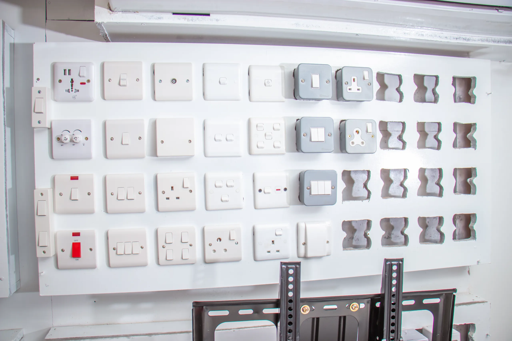

The tap wall
Every finish on one display, in the bathroom section
Ask what's in stock
Design system proposal · 19 November 2026 · For approval
Architectural editorial luxury for every Kenstar route: Swiss order, contemporary architecture, the showroom's own photography and the honesty of construction documents. Two environments carry it. Midnight is the hour the chandeliers are lit. Limestone is the showroom by day.
Nothing here is implemented yet. After approval, these tokens and foundation components move into the app, and DESIGN.md records them from the built result.

Principles only. None of these layouts, palettes or faces is borrowed: Ferrow's cream and italic serif, Illoca's grid paper and handwriting, and Archon's dark sci-fi grade all belong to other worlds.
| Reference | Principle we take | How Kenstar uses it |
|---|---|---|
| Ferrow Interiors codethatmoves.com | One fixed camera. A room accumulates in layers: sketch lines, surfaces, furniture, then evening light. The caption plate never moves. | Each journey chapter keeps one camera. Light is the last layer, and the stage caption sits in one fixed grid position. |
| Illoca rickcreates.com teardown | One unbroken shot in the real working order. The picture is a window cut into the page and placed by counting grid cells. The camera stops while you read. Proof appears only in contained panels. | Image windows snap to column lines. The journey holds still at each Field Note. Real photos appear only as Field Notes, never as decoration. |
| Pearl Towers contra.com | A modelled building rendered offline as an image sequence. It reads as 3D without loading 3D. First paint arrives fast and the frames stream in behind it. | Blender renders become frames. The first frame of each chapter is a real image in the HTML, and the rest stream in. |
| GSAP scroll image sequence gsapvault.com | One timeline draws frames to a canvas, opens a viewing aperture, crossfades captions and tracks progress. It pins only for the journey, and everything reverses. | The star opening and the portals use the same aperture idea. A still img sits under every canvas as the fallback. |
| Archon dev.viseni.com | A full-viewport canvas with cover-fit frames. Scroll distance per frame is longer on touch screens (22px against 10px) for thumb pacing. | Pacing is a token: 10px of scroll per frame on desktop, 20px on touch. Unlike Archon, we never preload a whole sequence. |
| landing.love GSAP collection | Not reviewed: the page sits behind a Cloudflare bot check. Send any sites from it you want studied and I'll add them. | |
Every colour is a material in the showroom photographs. Two environments alternate by purpose, not by habit: midnight for cinematic, arrival and night-lit moments, limestone for editorial reading and browsing, white for the product gallery.
Midnight
The cinematic environment: the homepage, the journey, the showroom visit, Contact and the footer. Photography glows here like a lit window. The logo is always reversed.
Limestone
The editorial environment: Products, About, Construction and Accommodation. It is the warm stone of the showroom floor and walls, never paper or parchment.
White, the gallery
Only behind product photography in the catalogue, so finishes read true, as they do on the showroom's white display walls.
Midnight
The hour the chandeliers are lit
#14283B · deep #0C1A28 · raised #1C3348
Limestone
The showroom's floor and walls
#F2EFE8 · stone #E6E1D6
White
Display walls, the product gallery
#FFFFFF
Graphite
Matte black taps; all text on light
#343A40 · soft #565D63
Brass
Fittings, chandelier gold. The one accent
#C58B45 · light #D6A160 · ink #865826
Mineral
Chrome and steel; lines and soft text on midnight
#89949B · light #AAB3B8
Olive
Embu's landscape outside: status, success, construction
#697B68 · light #93A691 · ink #4C5C4B
Brand marks
Logo navy and star gold live inside the logo only
#0B2D52 · #F59E0B
| Token | Limestone | Midnight | Job |
|---|---|---|---|
--surface | limestone | midnight | Section ground |
--surface-alt | stone | midnight deep | Alternate band, form panels, canvas letterbox |
--surface-raised | white | midnight raised | Product tiles, menus |
--text | graphite · 10.0:1 | limestone · 13.1:1 | All running text and headings |
--text-soft | graphite soft · 5.8:1 | mineral light · 7.1:1 | Secondary text, captions, keys |
--line / --line-strong | graphite 16% / 42% | limestone 14% / 38% | Hairlines; input and frame borders |
--action-bg | midnight, limestone text | brass, deep text · 6.0:1 | The one primary action per view |
--accent-ink | brass ink · 5.3:1 | brass light · 6.5:1 | Accent text and active markers |
--status-open | olive | olive light | The open-now dot, success |
--error | #A8321E · 5.8:1 | #F08A73 · 6.2:1 | Form errors only |
--focus | midnight | brass light | 2px focus ring, 3px offset |
--annotation / --plate | graphite 62% / limestone | limestone 55% / midnight deep | Drawing lines; the solid plate under drawing labels |
Contrast rules. Brass is never text on limestone or white (2.6:1); it fills buttons on midnight and draws rules and markers on light. Mineral on limestone (2.7:1) is for hairlines only. Olive marks status and success, and is never body text.
The logo rule. Midnight and the logo's navy share a hue (209° and 211°), so they sit together as one family. The full-colour logo appears only on limestone, stone or white. On midnight it is always reversed: white letters, gold star. Star gold appears outside the logo once, when the light switches on at the end of the journey.
Two faces, each with a strict job. Manrope sets everything large: its geometric construction and flat terminals answer the chamfered wordmark. Inter sets everything read or measured: text, captions, figures and drawing labels. Manrope never goes below 20px, and Inter never above 24px.
Chandeliers, lit at dusk.
From the first line to the final light.
Bathroom and toiletries
Taps, basins and the fittings behind them
Basin mixers
Hardware, electricals, bathroom, finishing, furniture and lighting under one roof on Market Road, Embu.
Visit the showroom to see finishes in person, or send a list on WhatsApp and we will reply with what is in stock. Running text holds a 66-character measure.
Basin mixer taps in chrome, grey, black and gold, on display in the bathroom section.
Field note 03.1 · Sheet 04 of 06 · 00°32′08″S 37°26′39″E · 2400 mm
| Level | Phone | Desktop | Step to next level (phone · desktop) | Weight |
|---|---|---|---|---|
| Display 1 | 52px | 96px | ×1.30 · ×1.50 | Manrope 600 |
| Display 2 | 40px | 64px | ×1.25 · ×1.45 | Manrope 600 |
| Heading 1 | 32px | 44px | ×1.28 · ×1.57 | Manrope 600 |
| Heading 2 | 25px | 28px | ×1.25 · ×1.40 | Manrope 700 |
| Heading 3 | 20px | 20px | The last heading level | Manrope 700 |
| Lede · Body · Caption · Technical | 18 · 17 · 13 · 12px | 20 · 17 · 13 · 12px | Text sizes step by role, not ratio | Inter 400 · 400 · 500 · 500 |
Chandeliers, lit at dusk.
The lighting hall on Market Road holds crystal, gold and ring pendants, from single fittings to cascades.
Bathroom and toiletries
Taps, basins and fittings for the rooms that carry water.
Taps and mixers
Basin mixers in chrome, grey, black and gold are on display together, so finishes can be compared side by side.
Basin mixers
Ask on WhatsApp for what is in stock.
--text. Ledes and secondary lines take --text-soft. A heading is never soft.Manrope 400, display size
Ring pendant, gold
Geometric construction, wider rounds and flatter terminals, closer to the wordmark. At text sizes it runs wide and loose.
Inter 400, display size
Ring pendant, gold
The better text face: compact, clear at 13–17px, with true tabular figures for hours, sizes and coordinates.
Manrope 600, as specified
Ring pendant, gold
Chosen for display and headings. Semibold at display sizes, bold for H2 and H3.
Inter 400, as specified
A gold ribbon pendant with three crystal lamps, hanging in the lighting hall on Market Road.
Chosen for text, captions and technical labels.
Finding. At the same weight the two are almost indistinguishable, as the top pair shows. The pairing only earns its place through role and weight: Manrope heavy and large, Inter regular and small, never side by side at one size. The pairing is also common in software marketing, so Kenstar's identity has to come from the scale contrast, the grid, the photography and the annotation layer, not from the faces.
A modular column grid on an 8px baseline. Image windows, text columns and drawings all start and end on column lines, the way Illoca places its window by counting cells. Asymmetry is deliberate: 7 + 5 and 5 + 1 + 6 rather than halves.
| Named span | Desktop | Tablet | Phone | Use |
|---|---|---|---|---|
| Reading column | 6 of 12, max 66ch | 6 of 8 | 4 of 4 | Body text, About long-read |
| Plan | image 7 + text 5 | image 8, text 6 below | stacked | Editorial pairs, category openers |
| Offset | text 5, void 1, image 6 | text 4 + image 4 | stacked | Quieter editorial rhythm |
| Gallery | 6 tiles of 2 (feature tile 4) | 4 tiles of 2 | 2 tiles of 2 | Catalogue |
| Cinematic | full bleed, text on columns 1–6 | full bleed | full bleed, portrait crop | Homepage, journey, route openers |
A 4px base that doubles at the large end. Tight inside a group, generous between groups, and always more space above a heading than below it. Sections breathe at 64–144px.
| Size | Value | Use |
|---|---|---|
| Controls | 40 · 48 · 56px | Small, default and hero actions. The touch target is never under 44px. |
| Header | 72px desktop · 60px phone | The sticky bar; the phone action bar is 56px |
| Icons | 16 · 20 · 24px, 1.5px stroke | Authored set, one stroke weight |
| Lines | 1px hairline · 2px rule | 2px only for section-opening rules and active tabs |
| Section padding | clamp(64px, 4rem + 4vw, 144px) | Every section; the cinematic stages use full viewport height instead |
The showroom shoot is 3:2, so 3:2 is home. Every other ratio is a crop with a job. Photography is evidence: it is cropped and lightly corrected, never restyled.






Do
Don't
Depth comes from changing environment, never from lifting boxes. Corners are square. The 45° cut from the wordmark appears in exactly two places: primary actions and Field Notes. Circles are kept for markers.
Limestone
Editorial ground
Stone
Alternate band, form panel, enquiry strip
White
Product gallery only
Midnight
Cinematic, arrival, footer
Midnight deep
Canvas ground, image letterbox, Field Note plate and the footer. Never a general section colour.
Midnight raised
Menus and panels that sit on midnight
Hairline · 1px
Dividers, table rows, tile grid
Strong · 1px
Inputs, secondary buttons, table heads
Rule · 2px
Opens a section, as on a drawing sheet. One per section.
Cut corner · 45°
10px on actions, 14px on Field Notes. Nowhere else.
No generic cards. The only containers are product tiles (photo on white, separated by hairlines), Field Notes, ruled specification lists and the stone enquiry panel. There are no shadows, except under a Field Note floating over an image.
The header takes the environment of the section beneath it: reversed and transparent over the cinematic homepage, solid limestone under a hairline on editorial pages. The showroom's open status always sits in the header.
The active page takes a 2px brass underline. Links are Inter 500 at 15px, sentence case.
Phone
From the first line to the final light.
Hours
Monday to Friday, 8am–5pm
Saturday and Sunday, 10am–5pm
Public holidays: call first
One primary action per view. Primary is the only filled and cut-corner control. Labels are verbs in sentence case. WhatsApp uses Kenstar's colours, not WhatsApp green.
| Variant | Look | When |
|---|---|---|
| Primary | Filled with --action-bg, cut corner, Inter 600 | The one main action of a view: visit, ask, explore |
| Secondary | 1px strong line, square | Alternatives: call, directions, email |
| Text link | Underline at 35%, solid on hover, trailing arrow | Inline and tile actions |
| Icon button | 44px square, 1px line | Carousel steps, menu, close |
| Motion | Colour 160ms; arrow moves 3px; press drops 1px | Loading draws a 2px line along the base, the drafting way |
A gallery, not a shop. White ground, product photos at true colour, hairline grid and no prices, carts or badges. Every tile ends in a question to Kenstar. One feature tile per row breaks the rhythm the way a showroom display does.
Taps, basins and fittings for the rooms that carry water, on display on Market Road.

Every finish on one display, in the bathroom section
Ask what's in stockChrome, grey, black and gold
Ask about thisFramed and frameless
Ask about this
White and grey plates
Ask about thisCrystal and gold, cascading
Ask about thisSeen something you need?
Send the list on WhatsApp and we'll reply with what is in stock.
Sample content from Kenstar's own photographs. Tile names are sub-categories, not product names; real product names come from Kenstar. The tiles mix ranges here only to show the grid.
The construction-document layer. Every mark states a fact: a dimension, a coordinate, a sequence, a name. Real drafting conventions only, drawn at hairline weight, with labels on a solid plate so they hold over photographs.
| Route | Intensity | What appears |
|---|---|---|
| Home | The full set: the wireframe logo, portal dimensions, drawn chapter scenes, reticles and Field Notes, chapter bubbles | |
| Construction | Project sheets: dimensions, datums, coordinates, scope schedules | |
| Products | Hairline grid, sub-category index, one dimension per category opener | |
| About | Section rules and a single datum line marking Market Road | |
| Accommodation | A room schedule as a ruled list; nothing drawn over photographs | |
| Contact | Coordinates, the route to Market Road and the hours as a ruled schedule |
Field Notes are where real Kenstar photographs enter the journey: evidence pinned to the rendered environment, like an AR tag on site. A reticle marks the point, a leader draws out to it, and a solid plate holds the photo and one true sentence.
A gold ribbon pendant with three crystal lamps, hanging in the lighting hall.
Photographed at Kenstar, Embu · June 2026
See the lighting rangeStand-in scene: the Blender render goes here
Anchor
A 14px reticle in limestone at the real point in the scene. At rest it shows at 40%.
Leader
A 1px line that draws out at 45°, then runs level, in 240ms. Scrolling up undraws it.
Plate
Midnight deep, a 14px cut at the top left, 300px wide on desktop. Header: note number and range.
Evidence
A 4:3 Kenstar photo, one factual sentence, the source line, and a link into the range.
Field note 06.1
A gold ribbon pendant in the lighting hall.
On phones
Phone is a first-class composition, not a squeezed desktop. Type scales fluidly between the breakpoints. The grid steps 4, 8 and 12 columns at 768 and 1280px.
| Part | Phone < 768 | Tablet 768–1279 | Desktop 1280+ |
|---|---|---|---|
| Header | 60px, menu sheet, fixed action bar | 72px, menu sheet | 72px, full nav, status, WhatsApp |
| Logo intro | Star at 42% of the short side | Same | Same; skippable everywhere |
| Portal carousel | One portal, swipe; text below the image | Portal 4 of 8 columns, text beside it | Portal plus stage: image 7, text 5 |
| Journey | Portrait frames (3:4), 20px scroll per frame, pinned notes | Landscape frames, notes as pins | Landscape frames, 10px per frame, full notes |
| Catalogue | 2 tiles; the feature tile spans both | 4 tiles | 6 tiles plus feature |
| Editorial pairs | Image then text | Image 8, text 6 | Plan 7 + 5 or offset 5 + 1 + 6 |
| Tables | Stack to label and value rows | Full table | Full table |
| Footer | One column | Two columns | Four columns |
Motion is construction: things are drawn, assembled and lit. There are three authored experiences and nothing else performs. Every other movement is feedback.
| Token | Value | Use |
|---|---|---|
--dur-instant | 100ms | Press, toggle |
--dur-fast | 160ms | Hover colour, underline |
--dur-base | 240ms | Field Note leader, tabs, menus |
--dur-slow | 480ms | Menu sheet, image hover zoom (1.03) |
--dur-scene | 900ms | Portal change |
--ease-out | cubic-bezier(0.16, 1, 0.3, 1) | Arrivals |
--ease-in-out | cubic-bezier(0.65, 0, 0.35, 1) | Camera, aperture, portal mask |
--ease-in | cubic-bezier(0.7, 0, 0.84, 0) | Exits only |
| Experience | Budget | Sequence |
|---|---|---|
| Logo | At most 3.6s, skippable, once per session | Construction lines 0–0.6s, letters drawn 0.2–1.0s, fills 1.0–1.4s, zoom to the star 1.4–2.0s, eyes 2.0–2.8s, then the star opens in 0.75s. The eyes draw 3–4 moves from a set of six (glance left, glance right, look up, squint, double blink, wide), with 280–620ms gaps and never the same move twice in a row. |
| Portals | 900ms, input-ready after 300ms | Image mask opens from the portal (900ms, in-out). Headline lines rise 12px with 60ms stagger from 120ms. Description at 280ms, actions at 360ms, index counts at the same moment. Manual only. |
| Journey | About 2.2 screens of scroll per chapter | 60–90 frames at 10px each (20px on touch), plus a hold of at least 40% of a screen at each Field Note. Wireframe, then environment, then evidence, in that order inside one sequence. |
One system, six art-directed rooms. The bar shows each route's balance of midnight, limestone and white.
| Route | Environments | Art direction |
|---|---|---|
| Home | Cinematic. The logo opens onto the portals, and the journey runs from road to the lit, furnished room. Full bleed, full annotation. | |
| Products | A gallery. Category openers in the plan grid, white tile walls, and one midnight band for the showroom visit. | |
| Construction | Technical. Project sheets with real dimensions and coordinates, large daylight photos, olive as the landscape accent. | |
| Accommodation | Calm. Generous white space, large interior photos once supplied, a ruled room schedule and almost no drawing. | |
| About | A long read. Reading column with offset images. The confirmed figures (100+ clients, 50+ projects, 200+ products) are set inside sentences, never as stat tiles. | |
| Contact | Arrival. A midnight visit opener with directions, hours, open status and coordinates, then a stone form panel. |
After approval: the tokens go into app/globals.css and the fonts into the layout. Then the foundation components: Section and grid, Button and TextLink, Header, phone menu and action bar, Footer, Figure, ProductTile, CategoryHeader, the annotation primitives and FieldNote. DESIGN.md is then written from what was built.